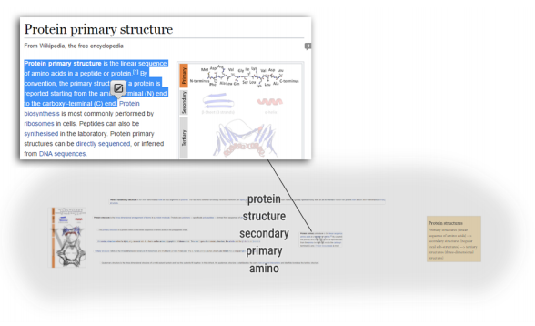

Collecting and Structuring Information in the Information Collage

Venue. arXiv (2019) Technical Report
Authors. Sebastian Sippl, Michael Sedlmair, Manuela Waldner
Abstract. Knowledge workers, such as scientists, journalists, or consultants, adaptively seek, gather, and consume information. These processes are often inefficient as existing user interfaces provide limited possibilities to combine information from various sources and different formats into a common knowledge representation. In this paper, we present the concept of an information collage (IC) -- a web browser extension combining manual spatial organization of gathered information fragments and automatic text analysis for interactive content exploration and expressive visual summaries. We used IC for case studies with knowledge workers from different domains and longer-term field studies over a period of one month. We identified three different ways how users collect and structure information and provide design recommendations how to support these observed usage strategies.